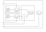

Re:search (8/?)
PhD - I year (part 2)
In classic tracking and navigation theory there are two dominant prediction models:- 1) NCV (Nearly Constant Velocity)
A linear model, involving the Cartesian components of the velocity vector as estimand, that assumes that the tracked object moves with fixed speed along a straight line; - 2) CT (Coordinated Turn)
A non-linear model, involving the speed and the turning rate as estimand, that assumes that the tracked object moves with fixed speed along an arc of a circle (meaning that the trajectory followed by the object has a fixed curvature radius).
The very same thing cannot be said for CT, and no one has never tried to relax the assumptions of this second prediction model.
My first official scientific contribution consists in the development of the LKM counterpart based on CT, which is Λ:O. Likewise the general LKM, Λ:O is able to predict maneuvering motions, with the advantage (at least in the extended object context) of employing the heading angle as a state variable.
Λ:O prediction scheme

The general version of my prediction model is based on three main ideas: (1) unicycle motion model (borrowed from mobile robotics);
(2) IIM (Integral Input Model), a chain of integrators fed with a white noise input (my original idea); (3) Tustin discretization to
solve the (so hard!) time-integration of the object velocity.